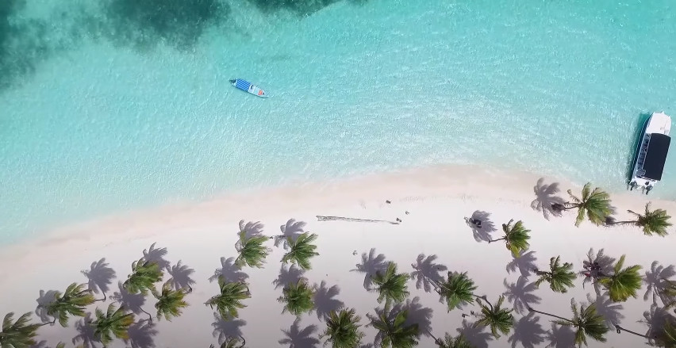
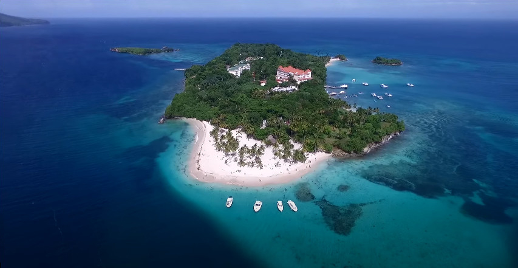
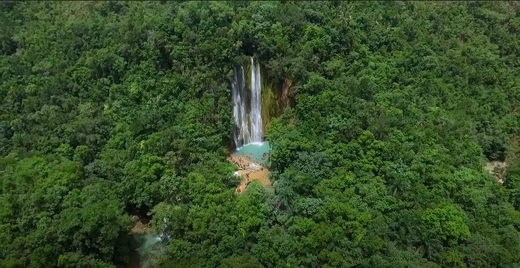
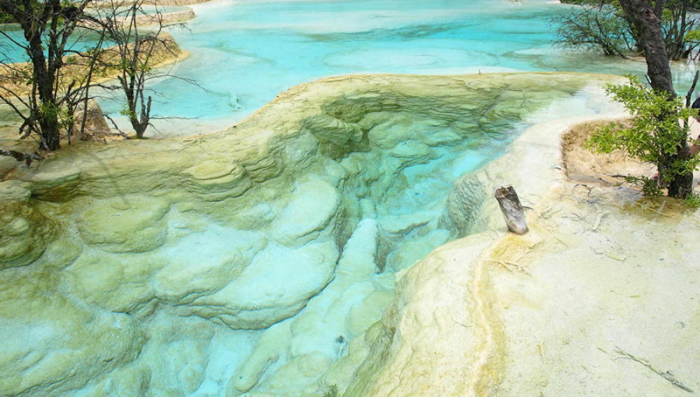
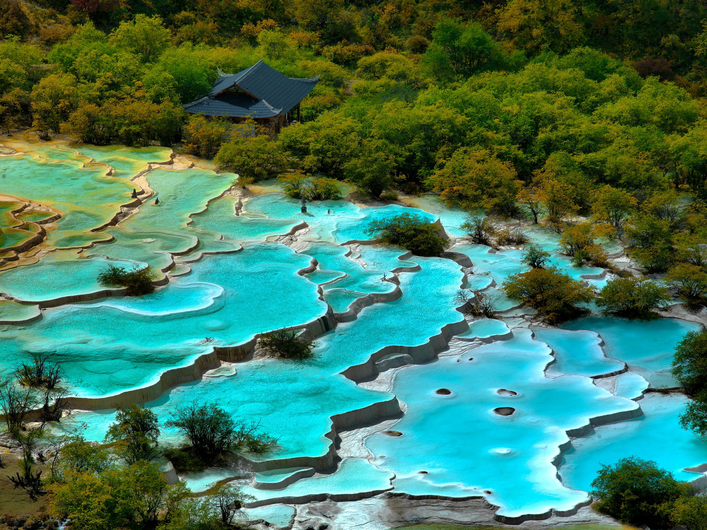
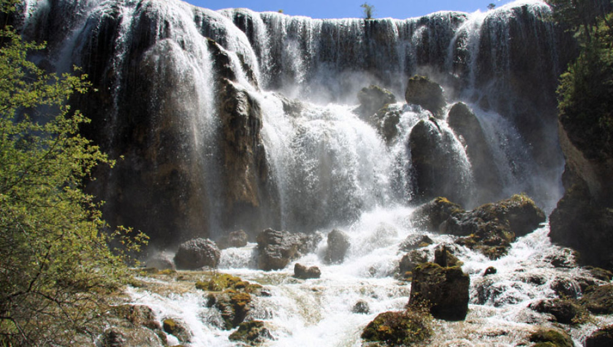
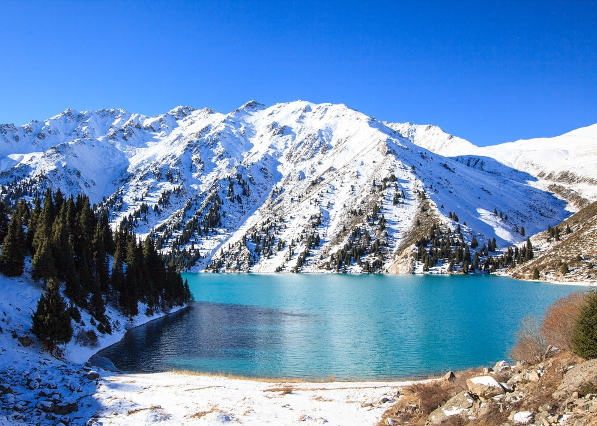
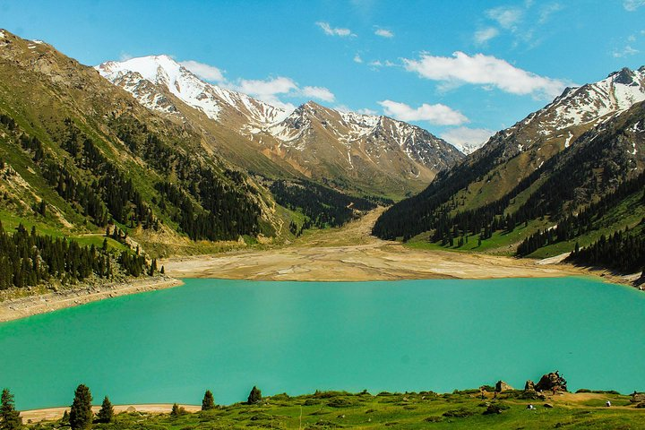
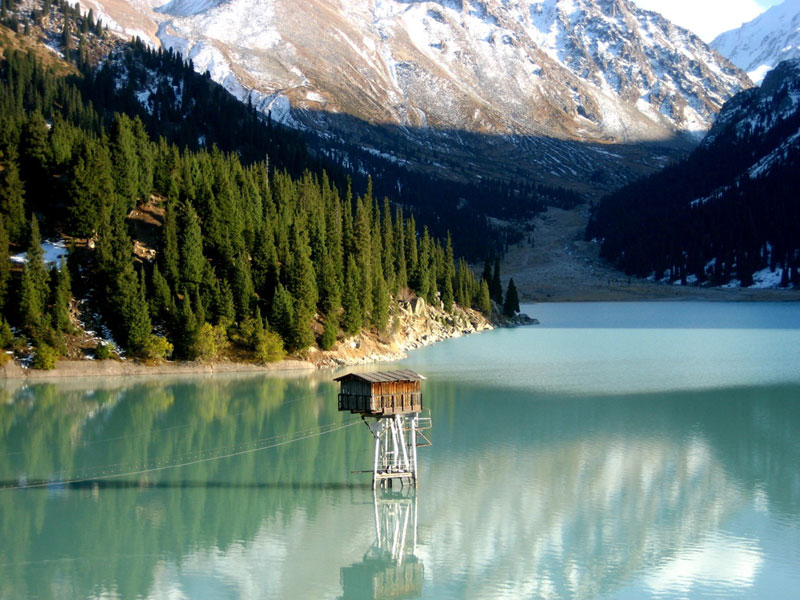

  
| Costa del Coco
Playa Bávaro Beach (Giant Forest)
Verón Punta Cana, República Dominicana
Playa Bávaro se encuentra en la famosa Costa del Coco, con más de 40 kilómetros de rincones tan especiales como ésta. Sin duda alguna, Playa Bávaro, es una de las playas más conocidas en Punta Cana y alrededor del mundo. ¿Quién no ha oído hablar de ella? Sus cristalinas aguas y su arena blanca poblada de cocoteros conforman uno de esos paisajes paradisíacos que no defraudan, en definitiva, el Caribe en su máxima esencia. No es de extrañar que la UNESCO la haya declarado entre las tres mejores playas del planeta.
Como es normal, un paisaje tan atractivo llama la atención del turismo y por ello, en las inmediaciones de este paraíso, se encuentran servicios de toda clase como hoteles, resorts, restaurantes y chiringuitos, para que puedas disfrutar de un buen cóctel tropical con este paisaje de fondo o saborear la auténtica cocina criolla de esta región. Este lugar también es estupendo para navegar a bordo de un catamarán, bucear en sus profundidades o simplemente practicar algo de snorkel, cualquier forma es buena para descubrir este pedacito de paraíso.
|
  
| Parque Nacional de Huanglong
Lago de Huanglong (Giant Forest)
Sichuán, China
Situados en la provincia de Sichuán, muestran un color azul cristalino puro, resultado de una sedimentación mineral única. El contraste con los bosques frondosos de extensión kilométrica y las grandes montañas nevadas del Minshan ofrecen un paisaje que se encuentra entre los más hermosos del mundo. Lo más hermoso de lago son los pequeños lagos de calcita a los que la nieve derretida ayuda a mantener temporada tras temporada.No son las únicas fuentes termales de la zona, pero sí las más importantes y turísticas. De hecho, forman parte de lo que se conoce como 'el Camino del Dragón Amarillo', con vistas de picos coronados por nieves perpetuas y decenas de cascadas cuyas aguas caen con intensidad.
El valle de Huanglong es el paisaje cárstico más grande e intacto del mundo. Posee más de 3.400 lagunas de diferentes colores, muchas de ellas a más de 3.900 metros sobre el nivel del mar, extendiéndose por un área de 21.000 kilómetros del noroeste de Sichuan.Una visita natural que no te dejará indiferente y que de finales de septiembre a octubre, junto a la primavera, ofrece las mejores estampas para fotografiar y extasiarse de belleza en medio del bosque, de montañas y, sobre todo, de lagunas cristalinas como el coral.
|
  
| Parque Nacional Ile-Alatau.
Lago Grande de Almaty (Giant Forest)
Almaty, Kazajstán
Aunque se llama el Gran Lago de Almaty, los que lo vean por primera vez se sorprenderán - el tamaño real es pequeño. El Gran Lago de Almaty debe su nombre al desfiladero en el que se encuentra, el Cañón de Almaty. Los lugareños llaman al Gran Lago de Almaty simplemente BAO, ya que es una abreviatura de su nombre en ruso - Bolshoe Almatinskoe Ozero. Este pequeño pero grande lago de Almaty está situado a 15 km al sur de Almaty. Anteriormente, el lago se llamaba Zhosalykol, que significa rojizo. El lago se encuentra a una altitud de 2.500 metros sobre el nivel del mar y está rodeado de cumbres montañosas. La roca más alta se llama el Pico de los Soviéticos y alcanza más de 4000 metros.
Como la mayoría de los lagos y embalses de Kazajstán, el Gran Lago de Almaty se formó como resultado de un terremoto. Hace unos 2000 años, un deslizamiento de tierra cayó por el pico del Gran Almaty, bloqueando el desfiladero y formando una presa natural. Dado que el agua del lago se utiliza como agua corriente para los residentes de Almaty, está estrictamente prohibido nadar en el lago, así como hacer picnics en su territorio. Pero esto no hace que el lago sea menos popular. Además, no muy lejos del Gran Lago Almaty, hay un observatorio (el Observatorio Astronómico Tien Shan), desde donde se puede disfrutar de una hermosa vista del cielo estrellado. Con el nivel fluctuante del agua en el lago, el color de la superficie también cambia. Dependiendo de la época del año, puede ir de un verde pálido a un color súper azul. Est Por cierto, el mismo cambio de color también ocurre en el lago de Kaindy.venir aquí más de una vez.
|

T R A B A J A M O S P A R A Q U E L O S A M A N T E S D E L A A V E N T U R A
~ E N C U E N T R E N S U L U G A R P E R F E C T O ~
|

| | |